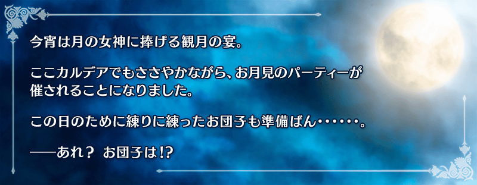
◆活動舉辦期間◆
2017年1月18日(三) 16:00～1月25日(三) 13:59
◆活動概要◆
完全由奈須きのこ所寫的故事，舉辦期間限定活動！
解決圍繞在賞月之夜晚降臨的神秘Servant上的事件！
活動期間中，在管理室(ターミナル)會出現活動關卡！
收集可在關卡獲得的2種類活動専用道具「特選団子」「月見団子」吧！
收集一定數量「特選団子」的話，除了會開放享受故事的主線關卡外，在主線關卡通過後，會開放可反覆刷來獲得活動道具的自由關卡。
另外，「月見団子」能依照收集的數量交換豪華道具。
挑戰活動關卡收集「月見団子」，交換豪華道具吧！
※本活動為於2015年舉辦的「月之女神會夢見糰子嗎？」，調整一部份活動専用道具交換的交換數等變得容易遊玩的「輕量版復刻活動」。
※活動限定概念禮裝與2015年舉辦時同様可以獲得。
◆活動参加條件◆
只有通過教學的Master才能參加
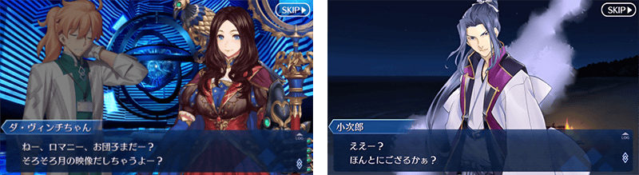
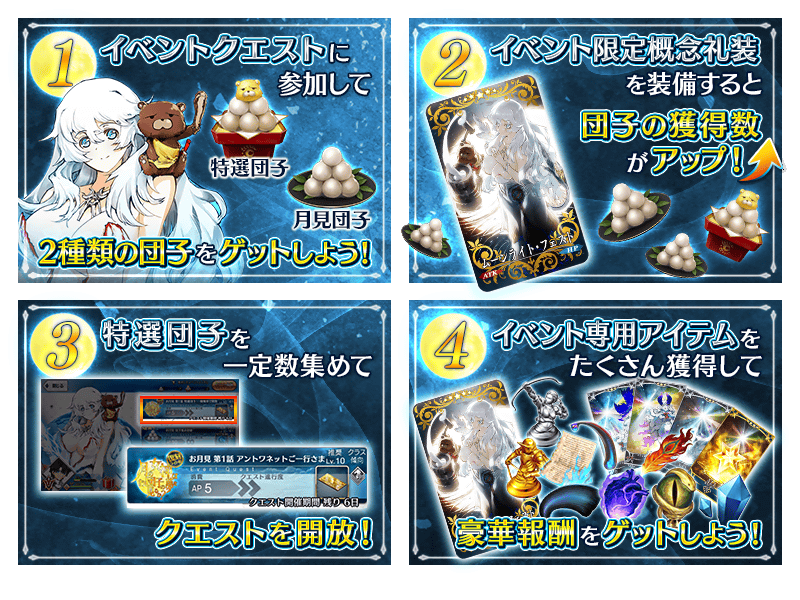
※1/17(二)修正
◆超值攻略方法◆
裝備能在活動道具交換入手的活動限定概念禮裝「ムーンライト・フェスト」、期間限定概念禮裝「月女神の沐浴」、「ムーニー・ジュエル」、概念禮裝「ムーンセル・オートマトン」的話，糰子的獲得數會大幅提升！
享受故事的主線關卡，是對應獲得的「特選団子」數量來開放。
通過主線關卡，會開放可反覆刷來獲得活動道具的自由關卡。
| 關卡名 | 必要個數 |
|---|---|
| 主線關卡 第1話 | 特選団子10個 |
| 主線關卡 第2話 | 特選団子40個 |
| 主線關卡 第3話 | 特選団子100個 |
| 主線關卡 第4話 | 特選団子200個 |
| 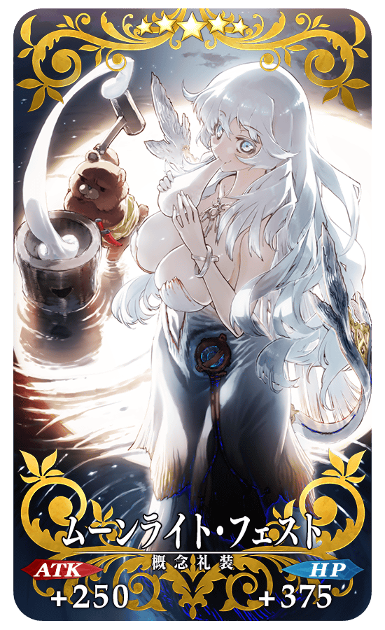 |
★★★★★SSR |
◆交換方法◆
交換期間：2017年1月18日(三) 16:00～2月1日(三) 13:59
※交換期間結束後「特選団子」「月見団子」會消失。
從達文西工房内的「活動道具交換」，用收集來的活動專用道具來交換以下的道具。
◆可用特選糰子(特選団子)交換的道具◆
|
【活動限定概念禮裝】 【技能強化＆靈基再臨素材】 【其他道具】 【活動専用道具】 |
◆可用賞月糰子(月見団子)交換的道具◆
|
【活動限定概念禮裝】 【技能強化＆靈基再臨素材】 【靈基再臨素材】 【其他道具】 【活動専用道具】 |
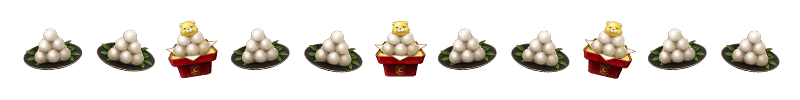
在「復刻：月之女神會夢見糰子嗎？輕量版」活躍的Servant「俄里翁」的一部份戰鬥動作翻新。
※只有戰鬥動作的翻新。寶具演出並無變更。
◆翻新時間◆
2017年1月18日(三) 16:00～
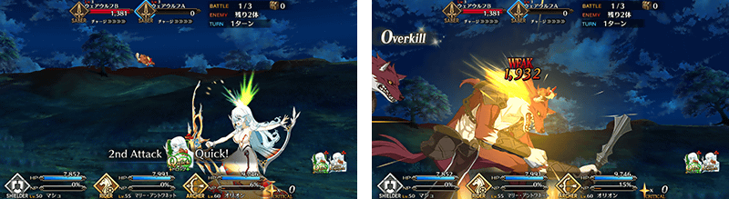
配合戰鬥動作的翻新，追加俄里翁的幕間物語！
◆追加時間◆
2017年1月18日(三) 16:00～
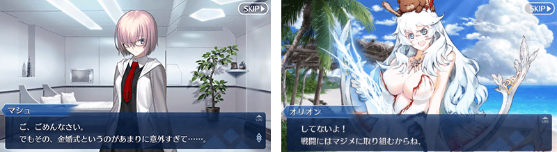

◆「復刻賞月少女Pick Up召喚」期間◆
期間：2017年1月18日(三) 16:00～2月1日(三) 13:59
舉辦期間限定「復刻賞月少女Pick Up召喚」！
完全復刻在2015年舉辦的賞月少女Pick Up召喚！
「★5(SSR)俄里翁」以期間限定Pick Up！
另外，「★4(SR)瑪莉・安東尼(Rider)」「★4(SR)絲西娜」「★3(R)牛若丸」「★3(R)荊軻」Pick Up！
詳情請在聖晶石召喚畫面左下的召喚詳細確認。
裝備期間限定概念禮裝「★5(SSR)月女神の沐浴」「★4(SR)ムーニー・ジュエル」及Pick Up概念禮裝「★3(R)ムーンセル・オートマトン」的話，活動専用道具的掉落獲得數提升。
※「★3(R)ムーンセル・オートマトン」也能在友情點數召喚獲得。Pick Up期間結束後也只能在友情點數召喚獲得。
Pick Up期間中，Pick Up Servant、期間限定概念禮裝、Pick Up概念禮裝的出現機率提升！
10次召喚中確定1張★4(SR)以上和確定1位★3(R)以上的Servant！
※確定★4(SR)以上包含Servant和概念禮裝。
※所謂「出現機率提升」意指比同稀有度的Servant及概念禮裝出現機率更高的設定。
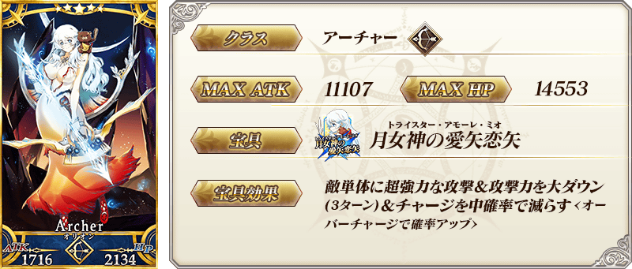

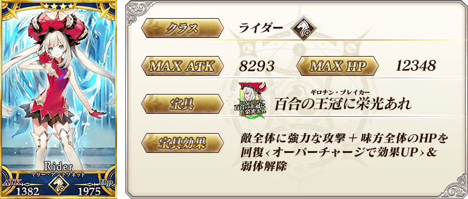


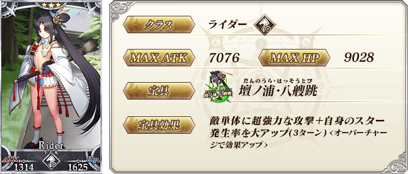

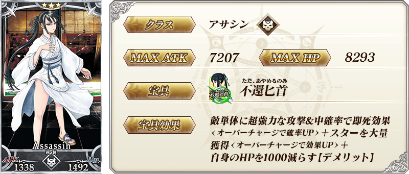
| 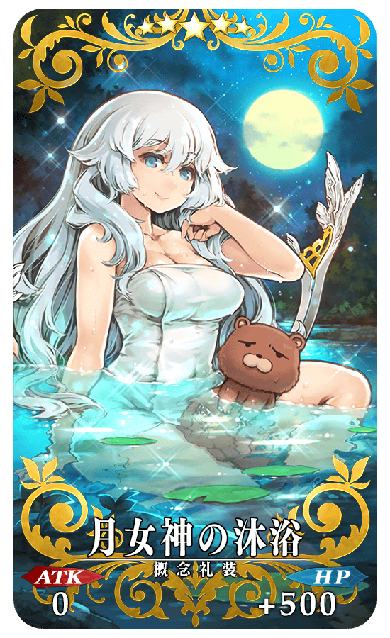 |
★★★★★SSR 月女神の沐浴 ATK 0 HP 500 (最大:2000) 技能 對自身賦予每回合HP500回復狀態 ＋ 糰子的獲得數增加100%【『復刻：月之女神會夢見糰子嗎？輕量版』活動期間限定】 |
| 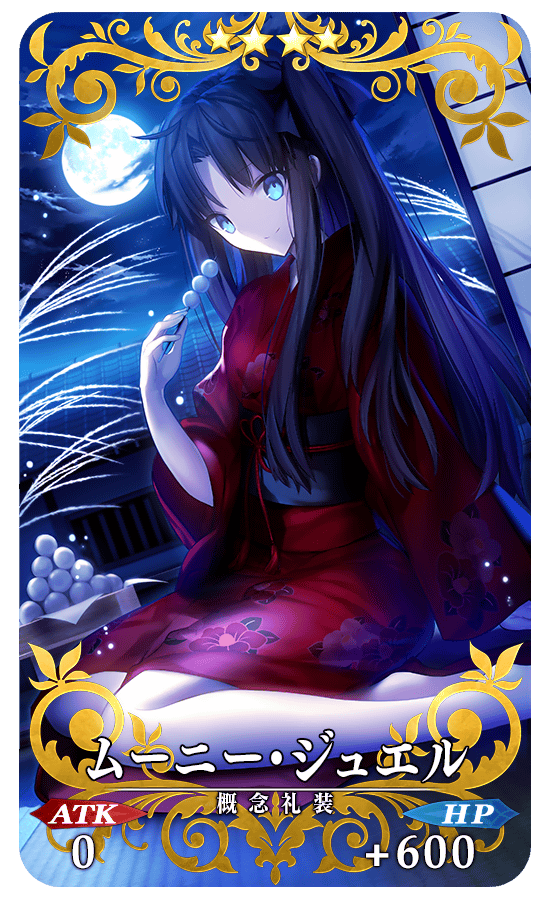 |
★★★★SR ムーニー・ジュエル ATK 0 HP 600 (最大:2250) 技能 自身的魅惑耐性提升80% ＋ 糰子的獲得數增加2個【『復刻：月之女神會夢見糰子嗎？輕量版』活動期間限定】  |
| 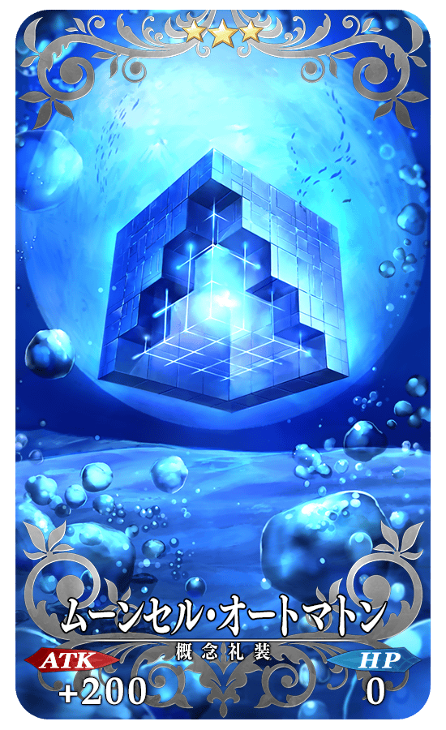 |
★★★R ムーンセル・オートマトン ATK 200 (最大:1000) HP 0 技能 自身的Arts卡的性能提升3%＆Buster卡的性能提升3%＆Quick卡的性能提升3% ＋ 糰子的獲得數增加1個【『復刻：月之女神會夢見糰子嗎？輕量版』活動期間限定】 |